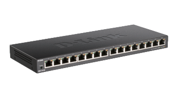

El DES-1016S es un switch Ethernet no administrado de la marca D-Link.
Hoja TécnicaEl DGS-1016S es un switch de red con capacidad para hasta 16 puertos Ethernet, lo que permite la conexión simultánea de múltiples dispositivos. Este tipo de switches son fundamentales en entornos empresariales, oficinas domésticas o redes de pequeñas y medianas empresas, ofreciendo una solución eficiente para gestionar la conectividad de dispositivos como computadoras, impresoras, servidores, y otros dispositivos de red. Su versatilidad y facilidad de uso lo convierten en una opción popular para mejorar la eficiencia y el rendimiento de la red.
Technical Specifications
| General | |
|---|---|
| Interfaces de dispositivo |
|
| Estándares |
|
| Funcionalidad | |
| Capacidad de conmutación | 32 Gbps |
| Características avanzadas |
|
| Tasas de transferencia de datos |
|
| Método de transmisión | Guardar y enviar |
| Tamaño de la tabla de direcciones MAC | 8K entradas |
| Filtrado de paquetes/Tasas de reenvío |
|
| RAM Buffer | 512 KB por dispositivo |
| Características físicas | |
| Indicadores LED |
|
| Intercambio de la interfaz multimedia | Ajuste automático MDI/MDIX para todos los puertos |
| Dimensiones | 280 x 110 x 25 mm |
| Peso | 0.77 kg |
| Entrada de alimentación | 12 V, 1 A |
| Consumo de energía |
|
| Temperatura |
|
| Humedad |
|
| MTBF | 564,658 horas |
| Disipación máxima del calor | 30.32 BTU/h |
| Emisión (EMI) |
|
| Seguridad | LVD |